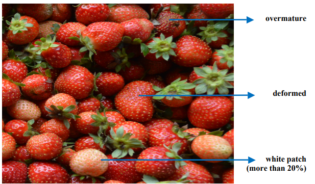

Strawberry Classifier
Upload images of Strawberry
The purpose of the system is to classify the image of a strawberry submitted by the
user into three different classes,
The classes are : Class 1, Class 2 and Extra Class. The strawberry will be
classified based on its appearance such as if there is deformity in shape,
white patches, pressure marks, dry bruising and traces of soil. The classification
of strawberries does not include type of shapes(Oblate, Globose, Conic etc.),
Ripeness of the strawberry, Diseases, Spoilage etc. and would only use the features
given only as the basis for the classification of the strawberry.
The system also doesn't use any real-time machine learning unlike other existing
image classification softwares, instead it only uses 2D Image files.
The system also doesn't use and produce 3D model images, the images use for training
the data are images captured using a camera and was manually classified
by the researchers. Only 800+ Images are only used in training the model which the
model only yields an accuracy of 82% on classifying. This means that not all
classifications given by the system is a 100% correct but the prediction is likely
correct compared to other
classification methods. It is also required for the user to upload strawberry
images, If the user were to upload images
other than strawberries
or strawberry images from the internet, The system would classify them as "Extra
Class" since it is the default
classification and that there is no "Other Class" classification trained
In the model of the system.
Image shows existing white patch and pest damage on strawberries.

Image shows overmature/overripe, deformed and more than 20% white patch on strawberries.
Source: PNS:Fresh fruits- Strawberry Classification and Grading.